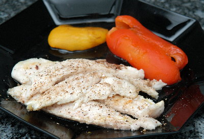

| Für 4 Personen: | |
| 2 | rote Peperoni |
| 2 | gelbe Peperoni |
| 8 | Seezungenfilets à 70g |
| Olivenöl zum Bestreichen | |
| Salz, Pfeffer aus der Mühle | |
| 2 El | Aceto Balsamico |
| 2 El | Olivenöl |
| Basilikum für die Garnitur | |
| Limetten für die Garnitur | |
Zubereitungszeit: ca. 30 Minuten + 15 Minuten ruhen lassen
Backofengrill auf 250°C vorheizen. Peperoni halbieren und entkernen. Mit der Hautseite nach oben auf ein mit Backpapier belegtes Blech geben. Etwa 20 Minuten direkt unter dem Grill rösten. Sobald die Haut schwarze Blasen wirft herausnehmen.
Peperonis in einen Plastiksack geben, verschliessen und 20 Minuten liegen lassen.
Peperoni schälen.
Seezugenfilets mit Olivenöl bestreichen. Auf beiden Seiten 1-2 Minuten bei mittlerer Glut grillieren. Erst am Schluss mit Salz und Pfeffer würzen.
Mit den Peperonihälften anrichten. Mit Olivenöl und Aceto umgiessen. Mit Salz und Pfeffer bestreuen.
Mit Limettenschnitzen und abgezupften Basilikumblättchen garnieren.
Frisches Bauernbrot dazu servieren.
Pro Person ca. 26g Eiweiss, 10g Fett, 8g Kohlenhydrate, 950 kJ, 230 kcal
Migros, Rezeptbroschüre
Hat am 14.12.2008 ausgezeichnet geschmeckt. Ich habe das in der Grillpfanne zubereitet und dann erst noch mit Pangasiusfilets weil das gerade im Tiefkühlregal lag. Ganz toll war der Balsamico mit den Peperonis! RE 14.12.2008
@LINKBACK_TAG@ @WAKELOCK@